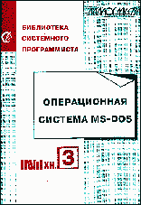

|  | Операционная система MS-DOS© Александр Фролов, Григорий ФроловТом 1, книга 3, М.: Диалог-МИФИ, 1992, 222 стр. |
В третьей книге первого тома приводится обширная информация о работе с дисками различными способами - от программирования контроллера до высокоуровневых средств, входящих в состав библиотек трансляторов Microsoft C. Подробно рассмотрена логическая структура дисков в MS-DOS. Описаны способы защиты данных от несанкционированного доступа и копирования, защиты от отладки. Приводится много программ на языке Си. Для системных программистов, аспирантов, студентов вузов.
 Дискета
с исходными текстами программ (79,8 Кбайт)
Дискета
с исходными текстами программ (79,8 Кбайт)